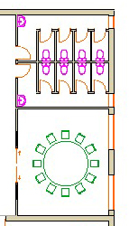
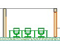

Soluzione 4
Proposta di una soluzione progettuale per il piano tipo di un edificio per uffici che preveda:
- l'accesso al piano attraverso una scala a doppia rampa
- una parete interamente vetrata attraverso cui sia possibile accedere ad un terrazzo esterno
- 6 postazioni di lavoro in un ambiente open space. Ogni postazione deve essere dotata di scrivania, sedia, libreria o scaffale, cassettiera
- una sala riunioni con un tavolo per 12 sedie
- servizi igienici per gli impiegati dell'ufficio
- due uffici autonomi adeguatamente attrezzati (tavolo, sedie, poltroncina, scaffale...)
- uno stanzino di servizio
Tutti gli ambienti, ad eccezione dello stanzino, devono essere dotati di finestra.
pianta

sezione
